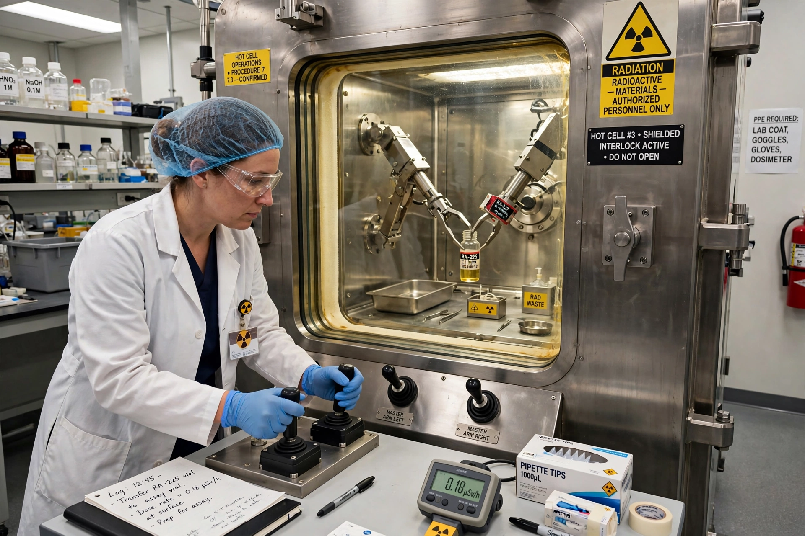

From Wikipedia, the free encyclopedia
| Radiochemistry | |
|---|---|
 | |
| Field | Chemistry / nuclear science |
| Key figures | Marie Curie, Otto Hahn, Glenn Seaborg |
| Applications | Nuclear medicine, dating, power, forensics |
Radiochemistry is the chemistry of radioactive materials, in which radioactive isotopes are used to study the properties and reactions of matter and to carry out chemical separations and analyses. Because radioactive atoms decay at measurable rates and emit detectable radiation, radiochemists can work with extraordinarily small quantities — tracer amounts far below the reach of ordinary analytical chemistry — and follow atoms through reactions, organisms and the environment.
The field began with Marie and Pierre Curie's isolation of polonium and radium from pitchblende in 1898. Frederick Soddy and Ernest Rutherford established that radioactivity involves the transmutation of elements; Otto Hahn and Lise Meitner's work led to the discovery of nuclear fission in 1938. George de Hevesy pioneered radioactive tracers, and during and after the Second World War radiochemists such as Glenn Seaborg developed the chemistry of the transuranium elements (see Glenn Seaborg).
Core techniques include solvent extraction, ion exchange and precipitation for separating radionuclides; radiometric counting with Geiger, scintillation and semiconductor detectors; and isotope dilution analysis. Radiochemistry underpins radiocarbon dating of archaeological samples, the production of medical isotopes such as technetium-99m and fluorine-18 for PET imaging, nuclear fuel reprocessing, environmental monitoring of fallout, and nuclear forensics. Work is governed by strict radiation-protection practice summarised as ALARA — keeping doses as low as reasonably achievable.